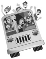
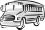

 Günlerden pazartesiydi ve George pazartesi günlerini hiç sevmezdi. Garaj yolunda durup arabasına baktı ve başını salladı. Aslında hiç de şaşırmamıştı. Talihsizlik, tıpkı yaşamının üzerinde dolaşan bir kara bulut gibi onu beş yıldır izliyordu ve bugün de diğerlerinden farksızdı. Arabasının lastiği tamamen inmişti ve George’un sinirden patlamak üzere olduğu görülüyordu. Yedek lastiği çıkarmak üzere bagajı açtığında, “Neden bugün?” diye haykırdı.
O sırada, karısının şu sözlerini hatırladı: “Onu tamir ettirmelisin George. Günün birinde lastiğin patlayacak ve keşke yedek lastiğim olsaydı diyeceksin.”
“Neden her zaman haklı olmak zorunda sanki?” diye düşündü. Birdenbire komşusu Dave aklına geldi ve hemen koşup işe gidip gitmediğine bakmak istedi. Dave de tıpkı George gibi şehir merkezinde çalışıyordu ve George onunla birlikte işe gidebileceğini umuyordu.
Bugün George’un iş yerinde önemli bir toplantısı vardı ve işe gecikmemesi gerekiyordu. Bugün olmazdı. Özellikle bugün gecikmemeliydi. George, Dave’in arabasının orada olmadığını görünce sımsıkı yumruğunu havaya savurdu. “Tabii ya” diye düşündü. “Nasıl hâlâ burada olabileceğini umdum ki zaten? Bu çok kolay olurdu çünkü benim için.”
Alnından terler akarak tekrar eve doğru koştu, sonra garaj yolunda durdu ve cep telefonuna bakarak iş yerinden arayabileceği birini düşünmeye çalıştı. “Düşün, düşün, hadi düşün.”
Sonra birden kafasına dank etti ki; gelip onu alması için arayabileceği hiç kimse yoktu iş yerinden. Geriye bir tek seçeneği kalıyordu; eşi. Ve o da böyle bir şey sorabileceği son kişiydi.
George eve girdiğinde her zamanki sesleri duydu ve mutfaktan karmakarışık gürültüler geliyordu. Okula gitmeden önce çocukların oturup kahvaltı etmeleri için uğraşan eşinin etrafında dört dönen köpek yavrusunun sesini duyabiliyordu. Mutfak kapısından dikkatlice içeriye baktı. Çocuklar onu görür görmez çığlıkları daha da arttı. “Merhaba baba!” diye bağırmaya başladılar. Kızı yanına koşarak kalçasına sarıldı. “Seni çok seviyorum baba” dedi ve George ona kuru bir teşekkür etmekle yetindi. Oğlu ise, “Baba, basketbol oynayalım mı?” diye bağırıyordu. George kendi evinde sanki gönülsüz bir şöhret gibiydi âdeta. Herkes ondan bir parça istiyor; fakat o yalnızca sessiz bir köşede her şeyden saklanmak istiyordu.
George, “Hayır!” diye bağırdı. Sonra kendini kaybetmişçesine, “Hafta sonunda değiliz. İşe gitmek zorundayım. Şimdi lütfen ikiniz de susun da annenize bir şey sorabileyim. Tatlım, arabamın lastiği patlamış ve yetişmem gereken çok önemli bir toplantım var. Yani, arabana ihtiyacım var!” dedi.
Eşi, “Yedek lastiğe ne oldu?” diye sordu.
“Tabii ki hemen bunu öne süreceksin. Pekâlâ, onu tamir ettirmedim.”
“Sana yardımcı olamayacağım George. Çocukları okula götürmem gerek, daha sonra diş doktoruyla randevum var, ardından köpeği veterinere götüreceğim ve sonra da çocukların öğretmeniyle bir görüşmem var. Daha sayayım mı? Yapacak işleri olan yalnızca sen değilsin. Bu ailede tek önemli kişi senmişsin gibi davranıyorsun fakat ben de bu evi ve aileyi idare ediyorum ve eğer bugün arabam olmazsa ben de kendi işimi yapamam.” George’un saldırılarını önlemek için önceden hücuma geçmek konusunda kendini geliştirmişti.
George, “Evet, fakat eğer bu toplantıya geç kalırsam artık bir işim olmayabilir” dedi.
George ve karısı ileri geri şakalaşmaya devam ederken, evin beş aylık yavru köpeği de George’a selam vermeye karar vermiş ve George onu tasmasından yakalayıp kulübesine götürene kadar hoplayıp zıplayarak salyalarını her yanına sürmüştü. “Şu köpeği de niye aldık ki sanki?” dedi. “Bunca şeyin arasında bir de köpekle uğraşmak zorunda mıyız yani?”
Küçük kızları, “Babam Sammy’yi sevmiyor” diye ağlamaya başlayınca karısı, “O çok tatlı bir köpek” dedi.
George, “Şu anda köpekle uğraşamayacağım doğrusu” diye karşılık verdi.
Eşi ise, “Zaten senin hiçbir zaman hiçbir şeyle uğraştığın yok ki” diye karşı çıktı.
George, “Çocukları okula bıraktıktan sonra beni de işe bırakamaz mısın?” diye sordu. “Hâlâ yetişme şansım var.”
“Vaktim yok, George. Bugün yapmam gereken işleri duymadın mı? Geri dönerken trafiğe takılacağım ve bütün günüm gidecek. Niçin otobüse binmiyorsun? Buradan otobüs durağı yalnızca bir buçuk kilometre mesafede.”
George hayal kırıklığına uğramış bir hâlde, “Otobüs mü? Dalga mı geçiyorsun? Otobüs ha! En son ne zaman otobüse bindiğimi Allah bilir. Otobüse kim biner ki?” diye sordu.
Karısı ise gayet net bir şekilde, “Pekâlâ, bugün bin o zaman” diye karşılık verdi. “Kim olacak, sen bineceksin.”
George, çantasını kapıp evden hızla çıkarken, “Bu harika” diye söylendi ve bir buçuk kilometre uzaktaki otobüs durağına doğru yürümeye başladı.
# 11 numaralı otobüs, oflayıp puflayarak bıyık altından küfreden George’un önünde durdu. “Bu ne sürpriz” diye düşündü George. Otobüse yetiştim. Bu şanssızlığım sayesinde onu kaçıracağımı düşünmüştüm.
George otobüse bindiğinde, ışıldayan bir çift göz ve hayatında gördüğü en güzel gülümsemeye sahip otobüs şoförüyle göz göze geldi.
Bayan şoför, neşe içinde, “Şanslı günündesin, şekerim” dedi.
George homurdanarak yerine oturdu. “Bugünün neresi şanslı ki?” diye düşündü.
Fakat bayan şoför, yerine oturana dek dikiz aynasından onu takip etti.
George, onun gözlerini üzerinde hissedebiliyordu. “Neden bana bakıyor acaba? Bilet ücretini de ödedim aslında” diye düşündü.
George, bayan şoförün kocaman, asla kaybolmayan gülümsemesini dikiz aynasından görebiliyordu ve “Bu kadın sürekli gülümsüyor mu böyle? Bugünün pazartesi olduğundan haberi yok mu acaba? Pazartesi günü kim böyle gülümseyebilir ki?” diye düşündü.
Şoför, “Nereye gidiyorsun?” diye sordu.
George, kendini göstererek, “Ben mi?” diye sordu.
“Evet, sen şekerim. Seni daha önce otobüsümde hiç görmemiştim, oysa bu güzergâhta giden tüm yolcularımı tanırım.”
George, “NRG Company’deki işime gidiyorum” diye yanıtladı.
Şoför, heyecanlı bir şekilde, “Şu üzerinde kocaman ampuller olan bina değil mi?” diye sordu.
Arkasına saklanmak için bir gazete almamış olduğuna pişman olan George, “Evet, biz ampul yapıyoruz” diye karşılık verdi.
Şoför, “Peki bugün otobüsüme binme şerefini bana vermenizi neye borçluyum acaba?” diye sordu.
“Patlak lastiğe. Otobüse binmekten nefret ederim fakat bugün çalışma ekibimle bir toplantıya girmem gerektiği için başka çarem kalmadı.”
“Pekâlâ, sadece arkana yaslan, rahatla ve hiçbir şey için endişelenme. Otobüse binmeyi sevmiyor olabilirsin fakat bu, sıradan bir otobüs değildir. Bu, benim otobüsüm ve yapacağın yolculuk çok hoşuna gidecek. Benim adım Joy (Mutluluk). Ya seninki?”
George, artık onu rahat bırakmasını ümit ederek ismini mırıldandı. Sözleri de tıpkı elektrik sigortası gibi kısaydı. George, en iyi gününde bile gevezelik etmekten hoşlanmayan bir adamdı ve ayrıca sabahın köründe fincanlarca kahve içmiş gibi görünen ve bu kadar isim arasında adı Joy olan bir şoförle çene çalmak gerçekten istemiyordu. Mecaz, diye düşündü George. Çünkü mutluluk, onun hayatında kesinlikle var olmayan bir şeydi. En son mutlu olduğu zamanı hatırlamıyordu bile. Bahse girerim onun hiçbir endişesi yoktur, diye düşündü. Tek yapması gereken her gün şu otobüsü kullanmak, gülümsemek ve yabancılara karşı nazik olmak. Elbette bana karşı neşeli davranıp gülümseyebilir; ama benim hakkımda hiçbir şey bilmiyor. Her gün baş etmek zorunda olduğum stresten haberi yok. İşte ve evdeki sorumluluklarımdan haberi yok. Eşim, amirim, çocuklarım, çalışanlarım, son ödeme tarihleri, mortgage, araba vergileri ve kanser hastası bir anne. Kendimi ne kadar bitkin hissettiğimden haberi bile yok.
Fakat şöfor, her gün otobüsüne binip inenleri tanıyor ve hemen fark edebiliyordu. Her türlü kılıkta, yaşta ve boyutta olabilirlerdi: adam, kadın, zenci, Çinli, beyaz yakalı, mavi yakalı. Yine de hepsinin üzerinde benzer bir enerji vardı. Bunu hemen görüp fark edebiliyordu. Cansız. Enerjiden yoksun. İçlerindeki lamba sönmüş gibi sanki. Etrafına parlak ya da kör bir ışık saçan insanları hemen ayırt edebiliyordu. Onlara ‘Karartıcı’ diyordu. Sadece günü geçiştirmeye çalışan zombiler gibi ortalıkta dolaşan insanlardı bunlar. Ne bir amaçları, ne arzuları ne de enerjileri vardı. Sanki gündelik hayatın çarkı bu enerjiyi emmişti içlerinden. Hayallerinden vazgeçmiş insanları hemen fark edebiliyordu. Gündüz çalışıp gece ailesiyle ilgilenen kadınları iyi tanıyordu ve onlardan sürekli şikâyetler işitiyordu. O kadar fazla insan çok stresli, çok yorgun ve çok çalışıyordu ki; işte bu sebeple Enerji Elçiliği görevini üstlenerek, otobüsüne binen herkese enerji dağıtmaya çabalıyordu. İşte bu yüzden bu yolculuğa Enerji Otobüsü adını vermişti. Ve şimdi enerji desteğini kullanabilecek biri varsa, o da George’du.
Şoför, kendinden emin bir tavırla, “Biliyorsun ki, otobüsüme binmenin bir sebebi vardı George” dedi. “Herkesin olduğu gibi.”
George, birden kendine gelerek, “Hayır, lastiğim patlamış olduğu için otobüsüne bindim” dedi.
“Buna ya o açıdan bakarsın ya da buradaki kocaman resmin farkına varırsın, George. Her şeyin bir sebebi vardır. Bunu sakın unutma. Tanıştığımız tüm insanlar, başımıza gelen tüm olaylar... Her patlak lastiğin bile bir sebebi vardır. Ya bunu yok sayarak hayatına devam edersin, ya da bu sebebin ne olduğunu bulmaya çalışıp ondan birtakım dersler çıkarabilirsin. Richard Bach’ın dediği gibi, her problem aslında sana bir hediye getirir. Bu hediyeyi mi yoksa laneti mi görmek istediğin senin elindedir. İşte bu seçim, yaşamının büyük bir başarı öyküsü mü yoksa bir pembe dizi mi olacağını belirler. İzlemek için yeterince pembe dizimiz varken, senin gibi gerçek hayattaki insanların bunları yaşamasından hoşlanmıyorum, George. Ve şunu da söylemeliyim ki, George, sana baktığımda, doğru seçimi yapmamış olduğunu görüyorum. Daha akıllıca bir seçim yap George, daha akıllıca bir seçim.”
Bu sırada otobüs durdu ve George, olabildiğince hızlı bir şekilde aşağı indi. Otobüs yolculuğu yapmış gibi değil de, daha ziyade otobüs çarpmış gibi hissediyordu. “Daha akıllıca bir seçim... Pembe dizi...” kafasına takılıp kalmıştı. Her neyse, diye düşündü ve aldırış etmedi. Ekibi onu bekliyordu ve o, geç kalmaktan nefret ederdi.
Joy her zaman yolcularının gözlerinin içine bakıp, gerçekleri yüzlerine çarpmazdı; fakat George gibi inatçı olanlar için başka yol olmadığını biliyordu. Böyle inatçı olanlar, potansiyeli de en yüksek olanlardı çünkü. Bunu biliyordu; çünkü yıllar önce o da tıpkı onun gibiydi. Neşesiz, bitkin, yorgun ve negatif... İnsanlar ona yardımcı olmak isterken her seferinde reddederdi. Dünyaya karşı öfkeliydi ve bunu hak ettiğini düşünmemişti. Yardıma en çok ihtiyacı olan insanların, gelecek olan yardıma en kapalı insanlar olmaları son derece ironikti. Tıpkı şu anda George’da olduğu gibi kocaman bir zırhı vardı ve acı gerçek onu delip geçebilecek tek silahtı. Joy bir daha George’u göremeyeceğini anlamıştı; fakat hiç olmazsa keskin sözlerinin işe yaramasını umuyordu.